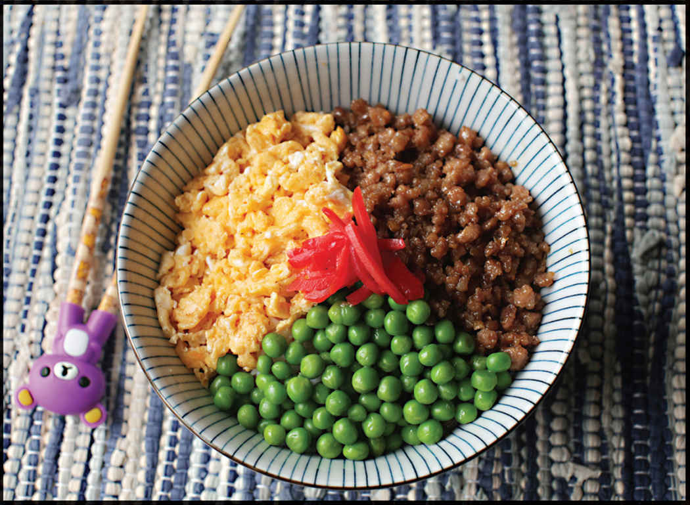

SANSHOKU DON (THREE-COLOR RICE BOWLS)

Yield Serves 2 |
Active Time 15 minutes Total Time 15 minutes |
Pork and chicken are the most common choices for the ground meat topping, but it will work with any ground meat you have, including vegan ground meat alternatives. You can use a cup of thinly sliced snap peas or two cups of tightly packed spinach leaves in place of the thawed frozen peas. Blanch snap peas or spinach in lightly salted boiling water for 1 minute, drain, and chill under cool running water, then dry carefully in a salad spinner or by pressing with paper towels.
Another staple from my childhood, sanshoku don translates as “three-color rice bowl.” It’s made with sweet stir-fried ground meat, scrambled eggs, and a green vegetable, typically peas or snow peas (though my mother frequently made it with spinach), all arranged like a pie chart on top of a bowl of rice. It’s great eaten warm, but equally good packed into a lunch box.
I find that if I cook the individual components—the meat, the egg, and the green vegetable—in advance and store them in the fridge, all I need to do is heat up a bowl of rice and top it, letting the heat of the of the rice warm up the toppings. Sanshoku don is typically garnished with beni-shoga or tsukemono (salty chopped Japanese pickles).
INGREDIENTS
For the Meat:
1 tablespoon (15 ml) peanut, rice bran, or other neutral oil
1 tablespoon (7.5 g) minced fresh ginger (about ¾-inch segment)
12 ounces (340 g) ground meat (see Notes)
2 tablespoons (30 ml) shoyu
2 tablespoons (30 ml) sake
2 tablespoons (30 ml) mirin
1 tablespoon (12.5 g) sugar
For the Eggs:
3 to 4 large eggs
2 tablespoons (30 ml) mirin
Kosher salt
1 teaspoon (5 ml) peanut, rice bran, or other neutral oil
To Serve:
4 bowls hot rice
1 cup frozen peas (see Notes), thawed
Beni-shoga or tsukemono, for garnish (optional)
DIRECTIONS
1 For the Meat: Heat the oil in a wok or skillet over medium heat until shimmering. Add the ginger and cook until fragrant, about 30 seconds. Immediately add the ground meat and cook, breaking it up with a wooden spoon or spatula, until it is mostly cooked through, about 2 minutes. Add the soy sauce, sake, mirin, and sugar and cook until all excess moisture evaporates and the mixture looks dry, a couple minutes longer. Transfer to a bowl and set aside.
2 For the Eggs: Scramble the eggs with mirin and a pinch of salt. Rub a thin film of oil into a wok or skillet and heat over high heat until lightly smoking. Turn off the heat, add the remaining oil, swirl to coat, then immediately add the eggs. Return the wok to medium heat and cook, scrambling vigorously until the eggs are completely cooked through and broken into very fine pieces, but not browned, about 1 minute. Transfer to a separate bowl and set aside. At this stage, the meat and eggs can be stored in sealed containers in the refrigerator for up to 3 days.
3 To Serve: Top bowls of hot rice with the meat mixture, egg, and green vegetables, dividing them into colored sections like a pie chart. Garnish with beni-shoga or tsukemono if desired.